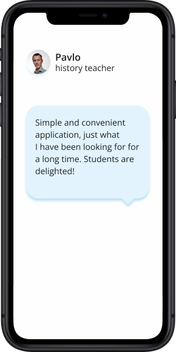
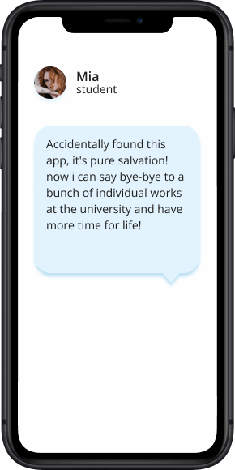
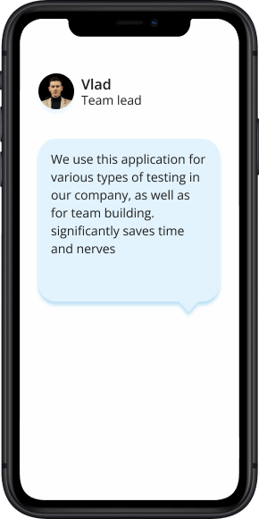

Roadmap
Concept Development 1
Drafting idea, concept, features, key features, vision & platforms
Research 2
Reseaching alternatives, competitors, budgeting & prices
Mockups & desing 3
Hiring UX\UI designer, fixing issues, testing & deployment, solving errors
Development 4
Front-end and back-end development
MVP 5
Getting user feedback
Beta version 6
Bug feexing
Release 7
Registering, Launching WEB App
Advantages
While using Generate My Test
quickly seting up personalized quizzes, enjoy the simplicity of the interface
create & manage various interactive quizzes in one application.
fast loading, uninterrupted quality of work, frugal battery consumption
using AI, experimenting with different forms of data input
How it works?
- Step 1
Add the text
- Step 2
Choose the language, type of test, number of tests and number of answers
- Step 3
Generate test
- Step 4
Pass the test and share your result
Who can use it?
$0 bln+
market turnover EdTech sphere forecast until 2025
0%
American students use AI for homework
0%
Europe\USA users choose mobile applications for study
Our team
We are a cool Ed Tech Startup from Ukraine
Our approach is to implement AI in the field of education and the study of new technologies
Vadym Yatsunyk
CO-founder & CEODmytro Matsiuk
CO-founder & CEOValues
- Growth
- Gratitude
- Generosity
- Global Impact
- Goal-Oriented
- Global-Mindedness
- Mastery
- Motivation
- Mindfulness
- Mission-Driven
- Mutual Respect
- Multiculturalism
- Trust
- Tenacity
- Thriftiness
- Teamwork
- Transparency
- Trustworthiness
Сhanging the world together
Reviews
- 
- 
- 
Frequently Asked Questions
What text formats can be used to create tests?
You can use different text formats such as handwritten text, images, sound files, video and PDF.
Can I save the created tests for future use?
Yes, the app has the ability to save the created tests so that you can use them in the future text formats such as handwritten text, images, sound files, video and PDF.
Is printing of created tests supported?
Yes, you can print the created tests for convenient use and archiving.
Can I create multiple choice & open questions in tests?
Yes, our application provides an opportunity to create both answer options for multi-line questions and open questions for the user to enter the answer.
What platforms does this mobile app support?
Our mobile app is available for users on Android and iOS platforms so you can use it on any device of your choice.
Support a promising startup -
make a contribution to the future!
We offer results
Don't waste your time and join the project that will change the future. Let’s do it together!